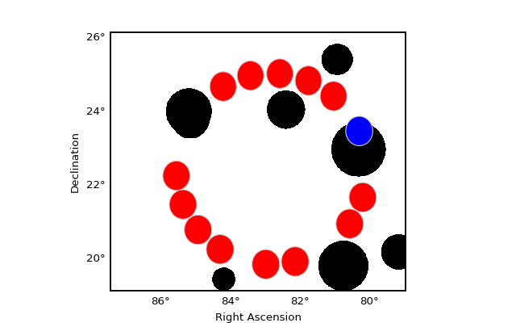

Reflected regions¶
Details on the reflected regions method can be found in [Berge2007]
The following example illustrates how to create reflected regions for a given circular on region and exclusion mask.
"""Example how to compute and plot reflected regions."""
from astropy.coordinates import SkyCoord, Angle
from regions import CircleSkyRegion
from gammapy.image import SkyMask
from gammapy.background import find_reflected_regions
mask = SkyMask.empty(name='Exclusion Mask', nxpix=801, nypix=701, binsz=0.01,
coordsys='CEL', xref=83.2, yref=22.7)
mask.fill_random_circles(n=8, min_rad=30, max_rad=80)
pos = SkyCoord(80.2, 23.5, unit='deg')
radius = Angle(0.4, 'deg')
test_region = CircleSkyRegion(pos, radius)
center = SkyCoord(82.8, 22.5, unit='deg')
regions = find_reflected_regions(test_region, center, mask)
import matplotlib.pyplot as plt
fig = plt.figure(figsize=(8, 5), dpi=80)
ax = fig.add_axes([0.1, 0.1, 0.8, 0.8], projection=mask.wcs)
mask.plot(ax, fig)
for reg in regions:
reg.plot(ax, facecolor='red')
test_region.plot(ax, facecolor='blue')
plt.show()
(Source code, png, hires.png, pdf)
{kind=link}
{kind=link}
